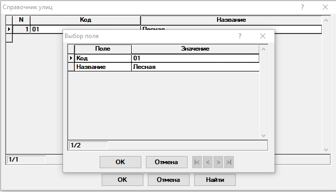

Справочник улиц
Содержит данные об улицах (рис. 1).

Рис. 1. Справочник улицДля заполнения доступно только одно поле:
-
Код — указывается код улицы. Код улицы используется при создании счетов и субсчетов. Поэтому предпочтительно использовать короткие коды улиц.
-
Название — указывается название улицы.
Если название улицы или код повторяют введенные ранее, то будет выведено соответствующее сообщение. Необходимо будет ввести другое название улицы или код.
|
|
Если на улице имеются участки, то удалить её можно будет только после удаления участков. |